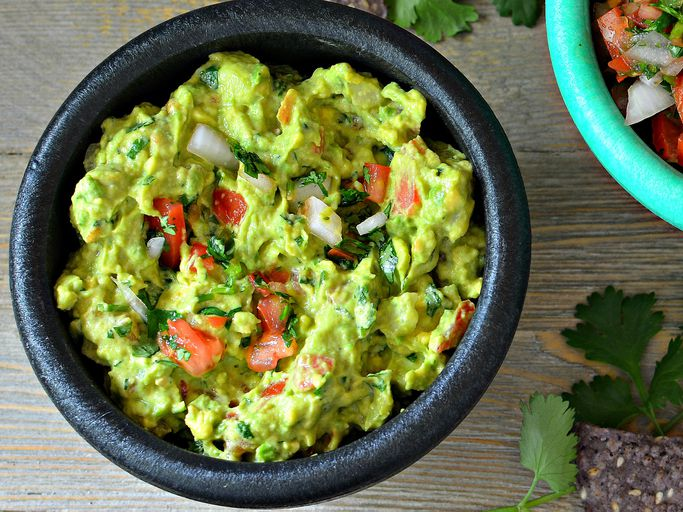

Guacamole Recipe

Description
This guacamole recipe gets a tasty kick from cayenne and cilantro. You can serve it smooth or chunky depending on your tastes. Serve with homemade tortilla chips.
Ingredients
- Avocados
- Lime
- Salt
- Vegetables
- Herbs and spices
Directions
- Mash avocados, lime juice, and salt together in a medium bowl; mix in tomatoes, onion, cilantro, and garlic. Stir in cayenne pepper.
- Serve immediately, or cover and refrigerate for 1 hour for improved flavor.